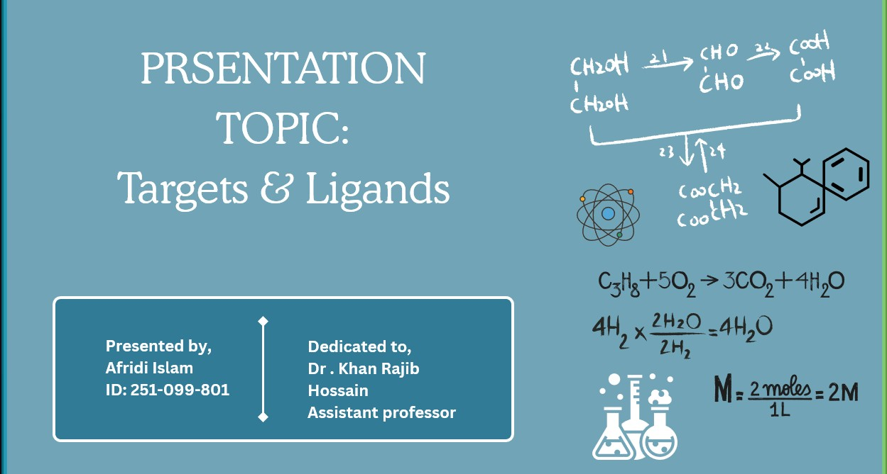
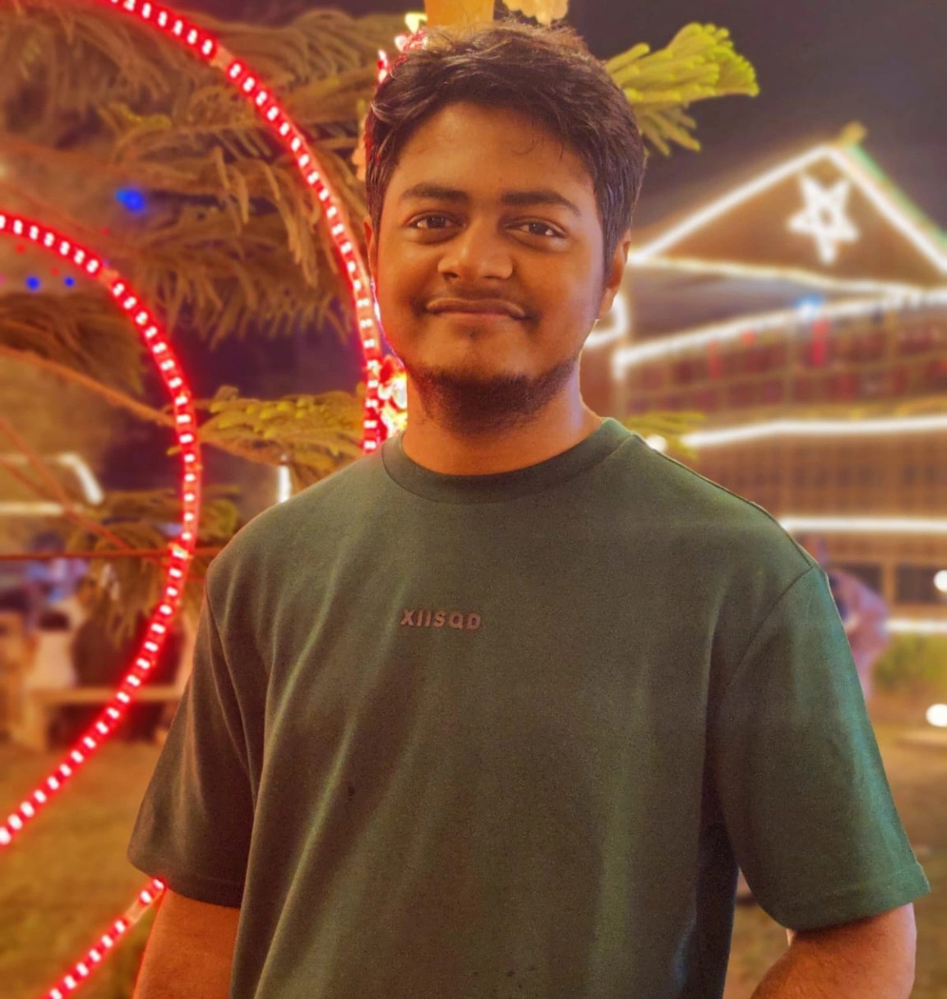

Textile Research & Projects

Microscopic Fabric Testing

Research At Chemistry

Textile Engineer
"I am a dedicated Textile Engineering student at BUFT, passionate about fabric innovation, sustainable manufacturing, and smart textiling. Currently focusing on material testing and modern yarn production technologies, I aim to bridge academic research with sustainable industrial practices."
Get in TouchSpecialized in synthetic fiber spinning, natural blending, and yarn count optimization.
Experienced in low-impact waterless dyeing technologies and eco-finishing processes.
Integrating conductive threads and responsive polymer treatments into wearable tech.
Microscopic Fabric Testing

Research At Chemistry